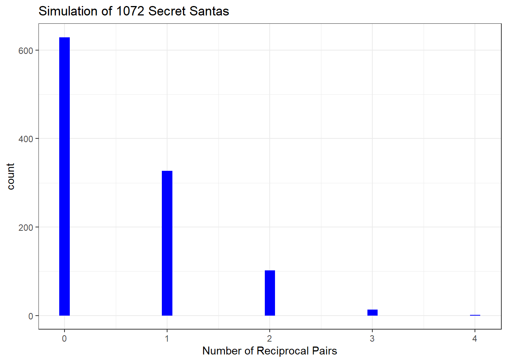

In December 2023, I participated in a Secret Santa event with 16 of my friends (see above). It was my first experience with a Secret Santa in such a large group. To our surprise, when we opened our gifts, my friend Jesse and I discovered that we had been assigned to each other as gift-givers. This was the only case of mutual gift exchange in our group, with no other pairs experiencing this kind of reciprocity. I was curious to know: what were the odds of this happening?
Create Intial Lineup
Below is an example of a table representing a lineup for Secret Santa.
test_shuffle
# A tibble: 17 × 2
recipient giver_shuffle
<chr> <chr>
1 Walter Bea
2 Nolan Keegan
3 Michael Onea
4 Devon Henry
5 Helen Carol
6 Bea Nolan
7 Onea Devon
8 Shelby Helen
9 Keegan Walter
10 Henry Michael
11 Sid Julie
12 Carol Shelby
13 Julie Sid
14 Maren Garret
15 Garret Maren
16 Fiona Gus
17 Gus Fiona
What we will do with this table is permute the “giver” column while leaving the “recipient” column as is. We then will count the number of times a reciprocal pair occurs and plot how frequently they occur. However, we must first address one large issue. When permuting columns, it is likely to get a lineup where someone’s name occurs twice in the same row, i.e., they give a gift to themselves. We do not want this to happen, so we must create a workaround.
Check Number of Matches in a Lineup
This code does exactly what is mentioned previously: it allows us to detect if there is a lineup where someone gives a gift to themselves.
set.seed(123)#if this function returns anything but zero, it means there is a match, which we do not want. checkMatch <-function(shuffle){ santaLength =nrow(names) match_count =0 bad_tibble_count =0for (i in1:santaLength){if(shuffle $recipient[i] != shuffle$giver_shuffle[i]) match_count = match_count +1 }if(match_count !=count(names)){ bad_tibble_count = bad_tibble_count +1 }return(bad_tibble_count)}
Simulate 3000 Lineups
Now we will simulate 3000 lineups and use our checkMatch() function to find those that are usable. Why 3000 lineups? I figured out ahead of time that this would give us around 1000 usable lineups due to the nature of the derangement of 17 items.
#creating list to store 1000 shuffles shuffled_tibbles <-list()# place 3000 permuted tibbles in the listfor(i in1:3000){ shuffled_giver <-sample(names$giver) new_tibble <-tibble(recipient = names$recipient, giver_shuffle =shuffled_giver) shuffled_tibbles[[i]] <- new_tibble}#check how many of them have at least one match, where giver and recipient are the same person. how_many_bad_tibbles <-function(list){ bad_tibbles =0for(i in (1:length(shuffled_tibbles))){ {if(checkMatch(shuffled_tibbles[[i]]) !=0) bad_tibbles = bad_tibbles +1 }}return(bad_tibbles)}#check our shuffled_tibbleshow_many_bad_tibbles(shuffled_tibbles)
[1] 1928
Initial Testing Results
We can see that 1929 of our lineups had one or more instances of someone giving themselves a gift, which is nearly 2/3rds of all of our lineups.
Subset of “Good” Lineups
To make sure that we have no rows where the giver and recipient are the same person, we create this function called remove_bad_tibbles. In the end, we will have a list of “good” lineups that we will iterate over to count reciprocal pairs.
remove_bad_tibbles <-function(list){#initialize empty list and an index so we don't skip over indices that don't match the if statement. good_tibbles <-list() good_tibble_index =0#r indexes at 1, this should workfor(i in (1:length(shuffled_tibbles))){ {if(checkMatch(list[[i]]) ==0){ good_tibble_index = good_tibble_index +1 good_tibbles[[good_tibble_index]] <- list[[i]] } } }return(good_tibbles)}good_tibbles <-remove_bad_tibbles(shuffled_tibbles) #store results in listlength(good_tibbles) #total number of tibbles that do not have matches
[1] 1072
We can see that we have simulated 1072 lineups without any matches. For our purposes, this is enough to perform the following analysis.
Analysis of “Good” Lineups
The following function checks to see how many reciprocal pairs occur in our usable lineups. A usable lineup is a lineup where nobody gives themselves a gift.
count_reciprocal_pairs <-function(data) { count =0for(i in1:nrow(data)) {# We check if there's a row where the current row's giver is the recipient and vice versa. We essentially reverse the order of recipient and giver and check if that exists elsewhere. reciprocal_exists <- data %>%filter(recipient == data$giver_shuffle[i], giver_shuffle == data$recipient[i]) %>%nrow() # creates a tibble of all matches for a given row of giver/recipientif(reciprocal_exists >0) { count = count +1 } }# Since each pair is counted twice, we divide the count by 2 to get the unique pairsreturn(count /2)}
Nice! The last thing to do is to plot how frequently each reciprocal pair occurs. What I mean by this is sometimes you will have lineups with 0 reciprocal pairs, sometimes there are 1,2, etc.
`stat_bin()` using `bins = 30`. Pick better value with `binwidth`.

sum(pairs_vector)/length(good_tibbles)
[1] 0.5354478
A little more than 50% of the time, we can expect that there will be 1 or more reciprocal pairs when doing Secret Santa with size 17. In the future, I would like to investigate this phenomenon with varying group sizes, some small, some large, etc.